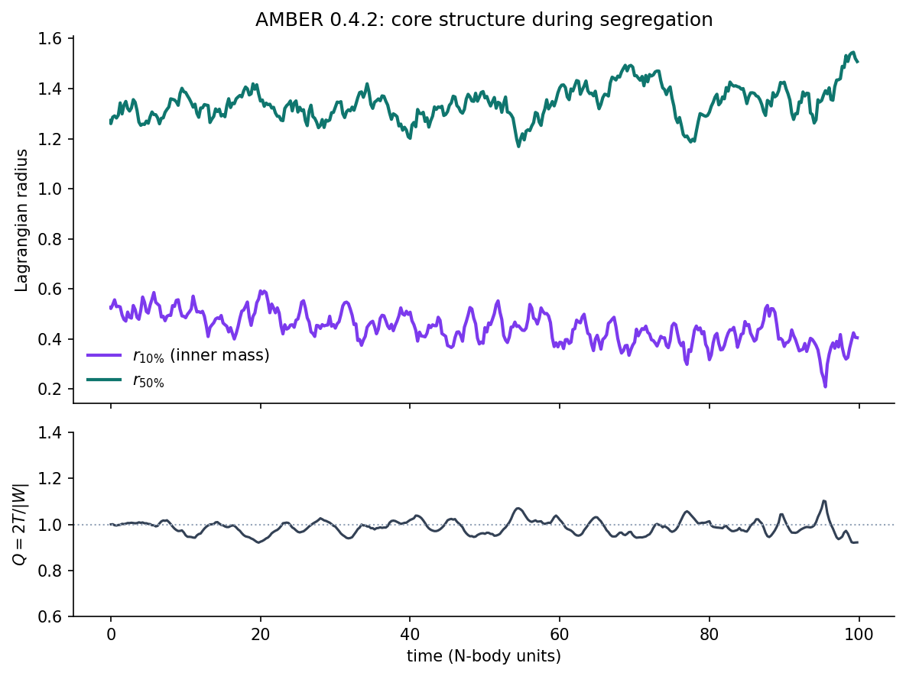

Heavy stars sink. Light stars leave.
Watching mass segregation grow in a quiet star cluster — and why that story needs more patience than a collapse.
Last time I dropped a cold star cluster and let gravity do the dramatic thing. Everything happens in a hurry: free fall, bounce, halo. You can almost watch it with your eyes closed.
Real clusters are rarely that theatrical. Most of the time they sit near equilibrium — not collapsing, not exploding — and still, slowly, rearrange. The heavy stars drift toward the center. The light ones get kicked outward. After a while the core is a different place than the outskirts. Astrophysicists call it mass segregation. It is quieter than violent relaxation, and in some ways more interesting, because nothing obvious is “wrong” with the cluster at the start. It just keeps having conversations, two stars at a time.
So I built that story in AMBER: five hundred stars, a fifth of them five times heavier than the rest, already in balance, and then… wait.
A calm beginning
Cold collapse is a punch. Mass segregation is a simmer.
I start from a Plummer sphere — the classic round, centrally concentrated cloud that textbooks love — and give everyone enough random motion that the cluster is already near virial equilibrium. The virial ratio Q = 2T/|W| sits around one from the first step. There is no free-fall cliff to fall off. If something changes, it has to come from the long chain of weak two-body scatterings we call relaxation, not from the whole ball of stars deciding to fall in at once.
The cast is small enough for a laptop: 500 stars, 100 of them “heavy” with mass ratio five. Softened gravity, fixed leapfrog step — same rough tools as the collapse post, just a longer afternoon. The full initial-condition and force helpers live at the bottom of the page if you want to re-run it; the story does not need them in the middle.
Stars as a table, not a crowd of objects
The gravity step is still the same kick–drift–kick leapfrog as before. What changes is the cast list: each star now carries a mass and a simple flag for “heavy or light.” In AMBER that is just another pair of columns on the population table. When I want the heavy half-mass radius, I do not loop through Python objects looking for a label — I ask for a view:
heavy = self.agents.where(self.agents.heavy)
light = self.agents.where(~self.agents.heavy)That is the small thing I actually like about putting this in an ABM framework. The physics is NumPy either way. The story-keeping — who is heavy, who is light, what their sizes are doing — stays attached to the same table the integrator is writing into. No parallel index arrays drifting out of sync at 2 a.m.
The full model is short enough to paste. Setup plants the Plummer sphere; each step advances everyone together; every so often we measure how far the two groups have wandered from each other.
class MultiMassCluster(am.Model):
def setup(self):
x, y, z, vx, vy, vz, m, heavy = plummer_ic()
self.add_agents(N, x=x, y=y, z=z, vx=vx, vy=vy, vz=vz,
m=m, heavy=heavy)
def step_vectorized(self):
x, _ = self.agents.borrow('x'); y, _ = self.agents.borrow('y')
z, _ = self.agents.borrow('z'); vx, _ = self.agents.borrow('vx')
vy, _ = self.agents.borrow('vy'); vz, _ = self.agents.borrow('vz')
m, _ = self.agents.borrow('m')
ax, ay, az = accelerations(x, y, z, m)
vx = vx + 0.5*DT*ax; vy = vy + 0.5*DT*ay; vz = vz + 0.5*DT*az
x = x + DT*vx; y = y + DT*vy; z = z + DT*vz
ax, ay, az = accelerations(x, y, z, m)
vx = vx + 0.5*DT*ax; vy = vy + 0.5*DT*ay; vz = vz + 0.5*DT*az
self.agents.commit(x=x, y=y, z=z, vx=vx, vy=vy, vz=vz)
# … record half-mass radii for heavy / light via agents.where(…)
results = MultiMassCluster({'steps': 4000, 'seed': 11}).cpu(mode='vectorized').run()On my machine that full run is about half a minute. Long enough to make tea. Short enough that you will actually re-run it when you change the mass ratio.
What the cluster decides to do
At the start, heavies and lights are sprinkled through the same Plummer cloud. Their half-mass radii sit close together — a little scatter from the random draw, nothing systematic. Then the quiet work begins. Hit play and watch the core remember who has weight.
x–y plane
Half-mass radius
Recorded from a full AMBER run (N = 500, mass ratio 5, 4000 leapfrog steps). Scrub or play — both panels share the same clock.
By the end the heavy stars have settled inward; the light population has puffed outward. The ratio of those two half-mass radii is a bit over two. Nothing “broke.” The cluster simply sorted itself, the way a restless room sorts itself when the loud people claim the center and everyone else edges to the walls.

What I am not claiming
Softening blurs true close encounters, so this will not grow hard binaries the way NBODY6 or PETAR would. Five hundred particles is a postcard of a globular cluster, not a census. Masses never change — no winds, no supernovae, no black holes quietly taking over the center.
Still, the shape of the story is right: equipartition pushing mass inward on a relaxation timescale, while the cluster as a whole stays roughly in balance. That is the step after violent relaxation that makes collisional dynamics feel alive to me. The drama is not the fall. It is the sorting.
Why bother with AMBER at all
You could write this as a pure NumPy script. Plenty of people do. I keep AMBER in the loop because the experiment wants to grow: more mass ratios, a tidal field, a second clump on a collision course. When the “agents” pick up labels, groups, and later maybe stellar types, I would rather those live in one columnar model than in a pile of parallel arrays I have to remember to zip together.
For production science on real dense clusters, use the tools built for that. For “can I feel mass segregation on my laptop before lunch?” this is the level I want.
If you want to play
Install the latest AMBER release with
pip install -U "ambr>=0.4.4", grab the
recipes below, run with seed 11, and plot the two half-mass radii. Change the mass ratio. Make almost
everyone light. Watch the split arrive later or sooner. The figures on this page came from that same
path on AMBER 0.4.4.
Next time I might put the cluster on a galactic orbit and let the tides peel a tail — or smash two Plummers together and see what survives. The collapse post was the punch. This one was the simmer. There is more kitchen left.
Questions, corrections, or AI/ML Engineer openings: duyanhpham(at)outlook.com.
Recipes (for the curious)
Plumbing only — Plummer initial conditions, softened unequal-mass gravity, and the usual size / virial helpers. Wire them into the model class above and you have the full run.
import numpy as np
import ambr as am
N, N_HEAVY, MU = 500, 100, 5.0
A, G, EPS2, DT, SEED = 1.0, 1.0, 0.05**2, 0.025, 11
m_light = 1.0 / (N_HEAVY * MU + (N - N_HEAVY))
m_heavy = MU * m_light
def plummer_ic(seed=SEED):
rng = np.random.default_rng(seed)
heavy = np.zeros(N, dtype=bool)
heavy[rng.choice(N, N_HEAVY, replace=False)] = True
m = np.where(heavy, m_heavy, m_light).astype(np.float64)
u = np.maximum(rng.random(N), 1e-12)
r = np.clip(A / np.sqrt(u**(-2/3) - 1), 0, 15 * A)
costh, phi = rng.uniform(-1, 1, N), rng.uniform(0, 2*np.pi, N)
sinth = np.sqrt(1 - costh**2)
x, y, z = r*sinth*np.cos(phi), r*sinth*np.sin(phi), r*costh
vesc2 = 2 * G / np.sqrt(r**2 + A**2)
q = np.empty(N)
for i in range(N):
while True:
x1, x2 = rng.random(), rng.random()
if x2 < x1**2 * (1 - x1**2)**3.5:
q[i] = x1
break
v = q * np.sqrt(vesc2)
costh, phi = rng.uniform(-1, 1, N), rng.uniform(0, 2*np.pi, N)
sinth = np.sqrt(1 - costh**2)
vx, vy, vz = v*sinth*np.cos(phi), v*sinth*np.sin(phi), v*costh
mtot = m.sum()
x -= np.sum(m*x)/mtot; y -= np.sum(m*y)/mtot; z -= np.sum(m*z)/mtot
vx -= np.sum(m*vx)/mtot; vy -= np.sum(m*vy)/mtot; vz -= np.sum(m*vz)/mtot
# rescale speeds so Q ≈ 1 (see half_mass_radius / virial_ratio helpers)
return x, y, z, vx, vy, vz, m, heavy
def accelerations(x, y, z, m):
dx = x[None,:] - x[:,None]
dy = y[None,:] - y[:,None]
dz = z[None,:] - z[:,None]
inv_r3 = (dx*dx + dy*dy + dz*dz + EPS2) ** -1.5
np.fill_diagonal(inv_r3, 0.0)
return (G*np.sum(m[None,:]*dx*inv_r3, 1),
G*np.sum(m[None,:]*dy*inv_r3, 1),
G*np.sum(m[None,:]*dz*inv_r3, 1))